矮人神系 Dwarven Pantheons
矮人神系也被称为「Morndinsamman」，在矮人语中意指「在天上的持盾弟兄」或「天上的矮人」，此神系的领导者是莫拉丁，�k也是矮人的创造者。
【强大神力 Greater Power】
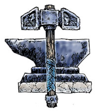
莫拉丁 Moradin （矮人众神之长）
别称：锻魂者 The Soul Forger，矮人之父 Dwarffather，万有之父 All-Father
圣徽：铁锤与铁砧
居住界域：矮人之家 Dwarfhome
阵营：守序善良 LG
神职：矮人 dwarves，创造 creation，锻造 smithing，保护 protection，金属工艺 mentalcraft，石制品 stonework
信徒：矮人防御者，矮人，工程师，战士，矿工，铁匠，
牧师阵营：守序善良 LG，中立善良NG，守序中立LN
神域：工艺 Craft，矮人 Dwarf，土 Earth，守序 Law，善良 Good，保护 Protection
喜好武器：魂之锤 Soulhammer（战锤 hammer）
【中等神力 Intermediate Power】
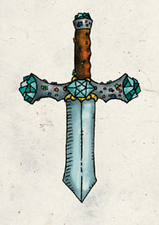
阿巴索 Abbathor （矮人的贪婪之神）
别称：伟大的贪婪之王 Great Master of Greed，无主物之主 Trove Lord，贪婪的翼龙 Wyrm of Avarice
圣徽：饰满贵重宝石的匕首
居住界域：矮人之家 Dwarfhome
阵营：中立邪恶 NE
神职：贪婪 Greed
信徒：矮人，矿工，盗贼，影舞者
牧师阵营：守序邪恶 LE，中立邪恶NE，混乱邪恶CE
神域：矮人 Dwarf，邪恶 Evil，幸运 Luck，贸易 Trade，诡术 Trickery
喜好武器：贪婪之心 Heart of Avarice（以钻石为刃的匕首 dagger）
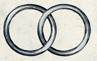
蓓伦妮�B真银 Berronar Truesilver （矮人的家庭女神）
别称：崇高的母亲 The Revered Mother，安全之母 Mother of Safety
圣徽：两枚相扣的银戒指
居住界域：矮人之家 Dwarfhome
阵营：守序善良 LG
神职：安全 safety，诚实 honesty，家庭 home，医疗 healing，矮人家族 dwerven family，记录 records，婚姻 marriages，信念 faithfulness，忠诚 loyalty，誓言 oaths
信徒：孩子，矮人防御者，矮人，战士，家庭主妇，丈夫，妻子，双亲，书记
牧师阵营：守序善良 LG，中立善良NG，守序中立LN
神域：矮人Dwarf，家庭 Family，善良 Good，医疗 Healing，守序 Law，保护 Protection
喜好武器：正义天罚 Wrath of Righteousness（重型钉头锤 heavy mace）
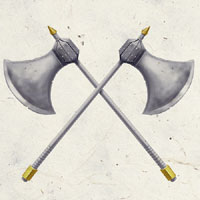
克兰贾汀�B银胡 Clangeddin Silverbeard （矮人战神）
别称：战斗之父 Father of Battle，双斧之王 Lord of Twin Axes，战斗之岩 the Rock of Battle
圣徽：交叉的双斧
居住界域：矮人之家 Dwarfhome
阵营：守序善良 LG
神职：战斗 battle，战争 war，英勇 valor，荣誉的战斗 honor in battle
信徒：野蛮人，矮人防御者，矮人，战士，武僧，圣武士，士兵，战略家，策士
牧师阵营：守序善良 LG，中立善良NG，守序中立LN
神域：矮人 Dwarf，善良 Good，守序 Law，力量 Strength，战争 War
喜好武器：巨人之敌 Giantbane（战斧 battleaxe）
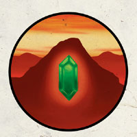
杜马松垠 Dumathoin （矮人的探索之神）
别称：山脉下的秘密守卫 Keeper of Secrets under the Mountain，静寂的守卫 the Silent Keeper
圣徽：藏在山脉中的多面宝石
居住界域：矮人之家 Dwarfhome
阵营：绝对中立 N
神职：埋藏的宝藏Buried wealth，矿脉 ores，宝石 gems，挖矿 moning，探索 exploration，盾矮人 Shield Dwarves，死亡之卫 Guardian of the dead
信徒：矮人，宝石匠，铁匠，矿工
牧师阵营：中立善良 NG，守序中立 LN，绝对中立 N，混乱中立 CN，中立邪恶 NE
神域：洞穴 Carven，工艺 Craft，矮人 Dwarf，土 Earth，知识 Knowledge，金属 Mental，保护 Protection
喜好武器：岩浆之锤 Magmahammer（巨锤 maul）
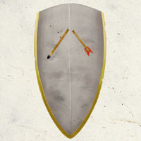
拉杜格 Laduguer （灰矮人的守护神）
别称：流放者The Exile，灰矮人的守护者 the Gray Protector，工艺大师 Master of Crafts
圣徽：以灰色盾牌为底，其上为断裂的箭矢
居住界域：矮人之家 Dwarfhome
阵营：守序邪恶 LE
神职：创造魔法武器 magic weapon vreation，工匠 artisan，魔法 magic，灰矮人 gray dwarves
信徒：矮人，战士，博学者，士兵
牧师阵营：守序中立 LN，守序邪恶LE，中立邪恶 NE
神域：工艺Craft，矮人 Dwarf，邪恶 Evil，守序 Law，魔法 Magic，金属 Mental，保护 Protection
喜好武器：无情之锤 Grimhammer（战锤 warhammer）
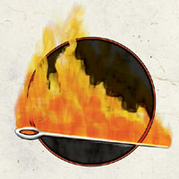
雪琳铎 Sharindlar （矮人的医疗与爱情女神）
别称：生命与慈悲女士 Lady of Life and Mercy，闪亮的舞者 the Shining Dancer
圣徽：穿过铁环的燃烧钢针
居住界域：矮人之家 Dwarfhome
阵营：混乱善良 CG
神职：医疗 healing，慈悲 mercy，浪漫爱情 romatic love，丰饶 fertility，舞蹈 dance，求爱 courtship，月亮 moon
信徒：吟游诗人，舞者，矮人，治疗师，恋人
牧师阵营：中立善良 NG，混乱善良 CG，混乱中立 CN
神域：混乱 Chaos，媚惑 Charm，矮人 Dwarf，善良 Good，医疗 Healing，月亮 Moon
喜好武器：迅螫 Fleetbite（鞭子 whip）
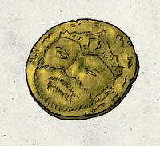
维加丁 Vergadin （矮人的窃盗之神）
别称：商人之王 Merchant King，矮小的父亲 the Short Father，欢笑的矮人 the Laughing Dwarf
圣徽：金片
居住界域：矮人之家 Dwarfhome
阵营：绝对中立 N
神职：财富 wealth，幸运 luck，机会 chance，非邪恶的小偷 nonevil thieves，怀疑 suspicion，贼技 trickery，谈判 negotiation，聪明 clecerness
信徒：矮人，商人，盗贼，有钱人
牧师阵营：中立善良 NG，守序中立LN，绝对中立 N，混乱中立 CN，邪恶中立 NE
神域：矮人 Dwarf，幸运 Luck，贸易 Trade，诡术 Trickery
喜好武器：寻金者 Goldseeker（长剑 longsword）
【弱等神力 Lesser Power】
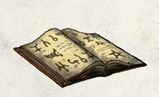
杜格马文�B明罩 Dugmaren Brightmantle （矮人的学识之神）
别称：眼之微光 The Gleam in the Eye，见多识广的探索者 the Errant Explorer
圣徽： 开启的书本
居住界域：矮人之家 Dwarfhome
阵营：混乱善良 CG
神职：学识 scholarship，发明 invention，发现 discovery
信徒：工匠，矮人，博学者，符文师，学者，修补器具者，法师
牧师阵营：中立善良 NG，混乱善良CG，混乱中立 CN
神域：混乱 Chaos，善良Good，工艺 Craft，矮人 Dwarf，知识 Knowledge，符文 Rune
喜好武器：锐钉 Sharptack（短剑 Short sword）
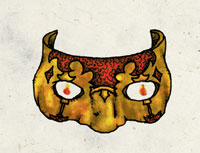
贡温�B葛辛 Gorm Gulthyn （矮人的防卫之神）
别称：火眼 Fire Eyes，青铜面具之主 Lord of the Bronze Mask，永恒的警醒者 the Eternally Vigilant
圣徽： 闪亮的青铜面具，眼窝处为燃烧的烈焰
居住界域：矮人之家 Dwarfhome
阵营：守序善良 LG
神职：众矮人之卫 Guardian of all dwarves，防御 defense，警觉 watchfulness
信徒：矮人防御者，矮人，战士
牧师阵营：守序善良 LG，中立善良NG，守序中立 LN
神域：矮人Dwarf，善良 Good，守序 Law，保护 Protection，战争 War
喜好武器：斧原 Axegard（战斧 battleaxe）
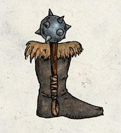
马瑟摩�B杜温 Marthammor Duin （矮人的旅行之神）
别称：发现踪迹者 Finder-of-Trails，流浪者之护 Watcher over Wanderers，看护之眼 the Watchful Eye
圣徽： 直立的钉头锤与以兽毛装饰的长统皮靴
居住界域：矮人之家 Dwarfhome
阵营：中立善良 NG
神职：引导 guides，探寻 explorers，放逐 expatriates，旅行者 travelers，闪电lighting
信徒：矮人，战士，游侠，旅行者
牧师阵营：守序善良 LG，中立善良 NG，混乱善良 CG
神域：矮人 Dwarf，善良 Good，保护 Protection，旅行 Travel
喜好武器：炽锤 Glowhammer（重型钉头锤 heavy mace）
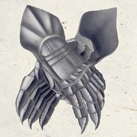
萨德�B哈尔 Thard Harr （野矮人的守护神）
别称：深林之王 Lord of the Jungle Deeps
圣徽： 由蓝银色金属制成的交叉带爪手套
居住界域：矮人之家 Dwarfhome
阵营：混乱善良 CG
神职：野矮人 wild dwarf，丛林求生 jungle survival，狩猎 hunting
信徒：德鲁伊，丛林住民，游侠，野矮人
牧师阵营：中立善良 NG，混乱善良 CG，混乱中立 CN
神域：动物 Animal，混乱 Chaos，矮人 Dwarf，善良 Good，植物 Plant
喜好武器：附爪铁手套 Clawed gauntlet （有刺铁手套 spiked gauntlet）
【微弱神力 Demigod】
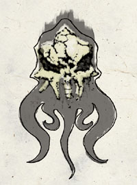
深地�B杜�� Deep Duerra （矮人的心灵异能与征服女神）
别称：不可见秘法之后 Queen of the Invisible Art，执斧的征服公主 Axe Princess of Conquest
圣徽： 破碎的灵吸怪头骨
居住界域：矮人之家 Dwarfhome
阵营：守序邪恶 LE
神职：心灵异能 psionics，征服 conquest，扩张 expansion
信徒：矮人，战士，心灵术士，幽暗地域的旅行者
牧师阵营：守序中立 LN，守序邪恶 LE，中立邪恶 NE
神域：矮人 Dwarf，邪恶 Evil，守序 Law，金属 Mental，战争 War
喜好武器：心灵碎片 Mindshatter（战斧 battleaxe）
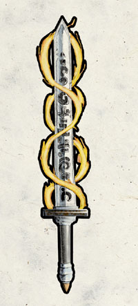
海���B明斧 Haela Brightzxe （矮人的女武神）
别称：争斗女士 Lady of the Fray，幸运夫人 Luckmaiden
圣徽： 锋刃朝上直立的剑，周围有两道螺旋型的火焰
居住界域：矮人之家 Dwarfhome
阵营：混乱善良 CG
神职：战斗中的好运 luck in battle，战斗中的乐趣 joy in battle，矮人战士 dwarven fighters
信徒：野蛮人，矮人，战士
牧师阵营：中立善良 NG，混乱善良 CG，混乱中立 CN
神域：混乱 Chaos，矮人 Dwarf，善良 Good，幸运 Luck，战争 War
喜好武器：火焰之束 Flamebolt（双手巨剑 greatsword）
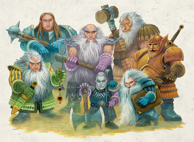
前排由左至右为
贪婪之神 阿巴索 [中等神力]
灵能女神 深地�B杜�� [微弱神力]
学识之神 杜格马文�B明罩 [弱等神力]
后排由左至右为
生命女神 蓓伦妮�B真银 [中等神力]
战斗之神 克兰贾汀�B银胡 [中等神力]
探索之神 杜马松垠 [中等神力]
防卫之神 贡温�B葛辛 [弱等神力]
矮人众神群像 2
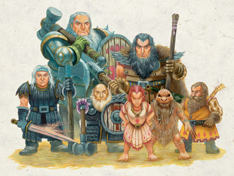
前排由左至右为
战斗女神 海���B明斧 [微弱神力]
灰矮人之神 拉杜格 [中等神力]
爱情女神 雪琳铎 [弱等神力]
野矮人之神 萨德�B哈尔 [弱等神力]
窃盗之神 维加丁 [中等神力]
后排由左至右为
矮人主神 莫拉丁 [强大神力]
旅行之神 马瑟摩�B杜温 [弱等神力]